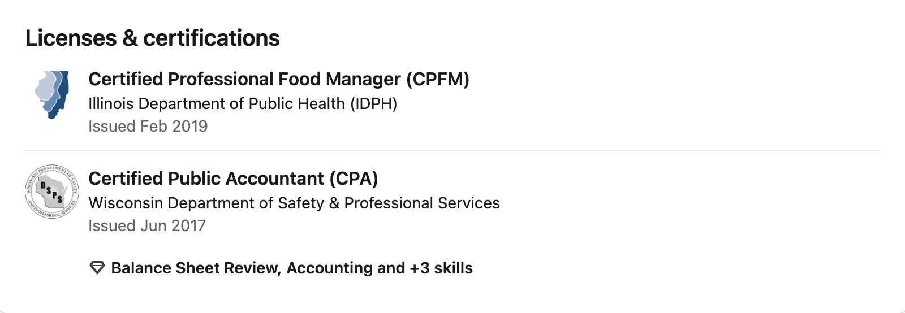
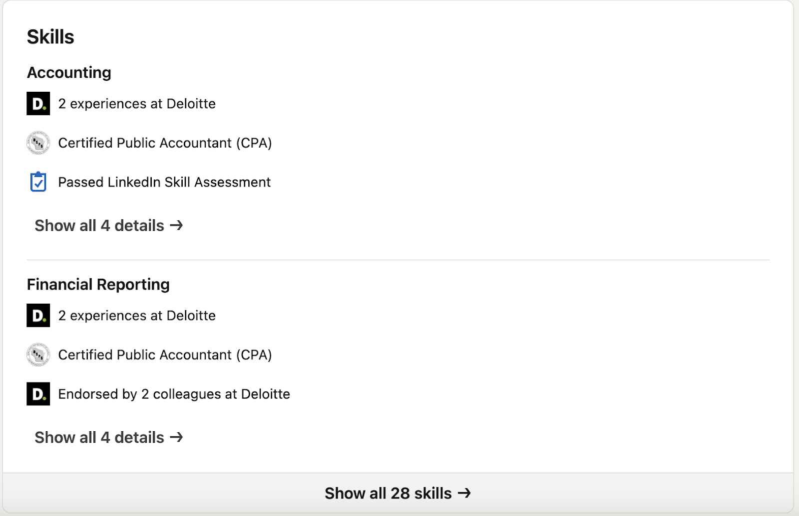
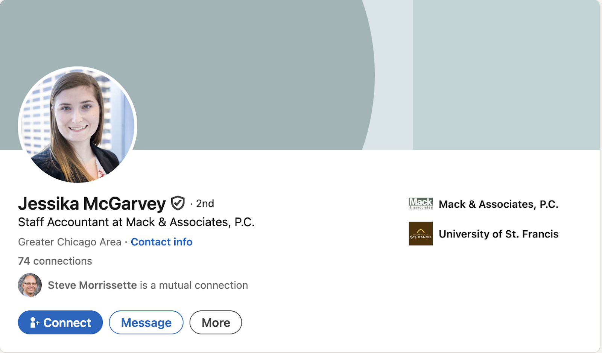
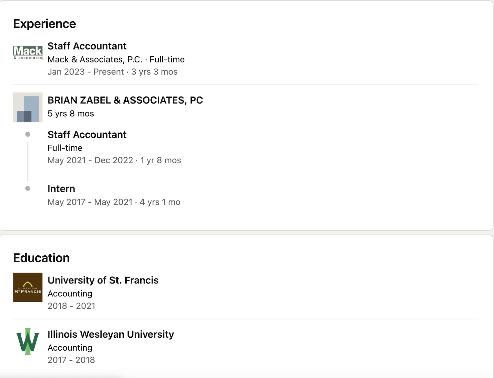
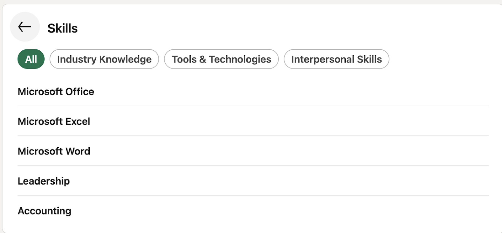
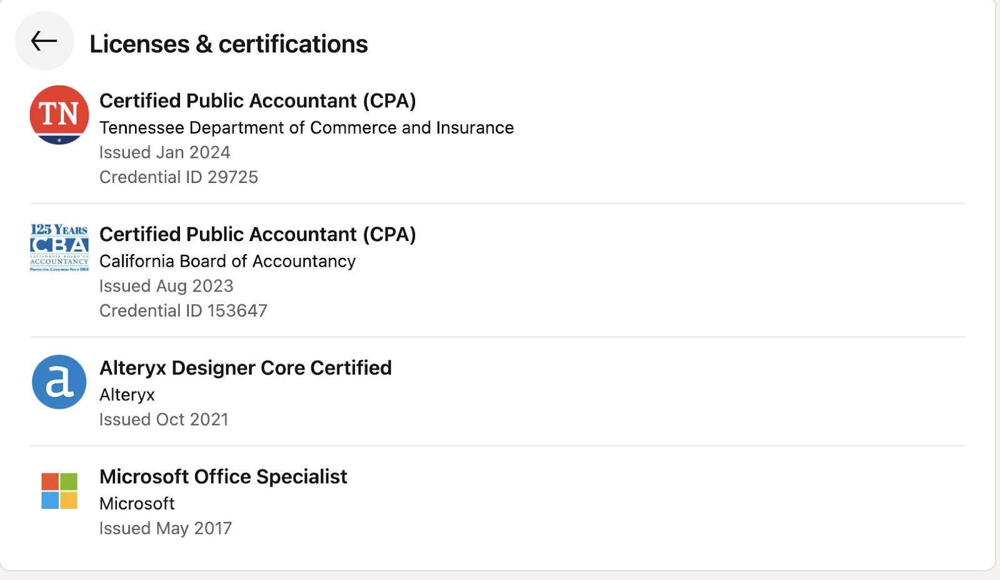
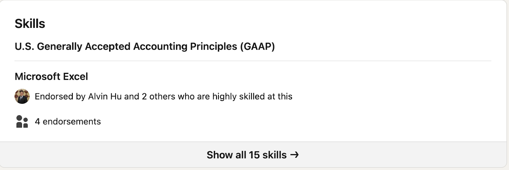
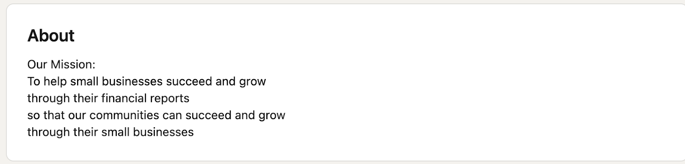
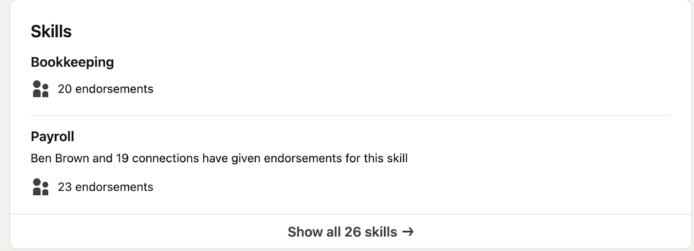

Four accounting professionals at different career stages and paths. Study what makes each profile effective, then apply those lessons to your own.
How to Use This Resource
Each profile below includes real LinkedIn screenshots with detailed descriptions. As you study them, pay attention to:
What does their headline communicate in one line?
How does their About section tell a story rather than list qualifications?
How does their Experience section show progression or depth?
Which profile feels most relevant to where you are now, and why?
Every screenshot includes a text description below the image so you can study the profiles regardless of how well you can see the images.
Profile 1: Perla Jaimes-Diaz, CPA
A CPA who moved between Big 4, entrepreneurship, and in-house accounting
Header and About Section
Header and About section
Perla's headline packs three identities into one line: her credential (CPA), her role (Senior Accountant), and a personal value (Mental Health Advocate). Her About section is a narrative, not a list. She names specific career chapters — Deloitte audit, restaurant ownership, family office — and connects them into a story about how each shaped her approach. She closes with a personal identity statement as a first-gen Latina and an invitation to connect.
Experience
Experience section
Perla's career path is nonlinear: she started as an audit intern at Deloitte, rose to Senior Audit Assistant, then left to run a restaurant for nearly five years before returning to corporate accounting. Her current role as Senior Accountant at MacLean-Fogg Company shows she successfully transitioned back. LinkedIn skills tags (Attention to Detail, Teamwork, Problem Solving) appear under multiple roles, showing consistency across very different jobs.
Licenses and Certifications

Licenses & Certifications
Perla holds a CPA from Wisconsin and a Certified Personal Finance Manager (CPFM) credential. The CPA is the core license for her audit and accounting work; the CPFM reflects her current family office role managing personal wealth. She lists the issuing body (State of Wisconsin, Department of Safety and Professional Services), which adds credibility.
Skills

Skills section
Perla has 28 listed skills. The two shown — Accounting and Financial Reporting — are validated three ways each: by work experience at Deloitte, by her CPA credential, and by either a LinkedIn Skill Assessment or colleague endorsements. This layered validation makes the skills section more credible than a simple keyword list.
What to notice about Perla's profile
Headline strategy: She uses the pipe character (|) to separate three distinct signals: credential, role, and personal brand. A recruiter scanning search results gets all three without clicking in.
Nonlinear career as a strength: Instead of hiding her restaurant years, she positions them as part of a coherent story about leadership and problem-solving. The About section explicitly connects the dots.
About section as narrative: Three paragraphs, each with a purpose — current role and background, how experience connects, personal identity and call to action.
Skills backed by evidence: Each skill links to experience entries, certifications, or assessment results rather than standing alone.
Experience (Detailed View)
Profile 2: Jessika McGarvey
A staff accountant who interned at one firm during college and converted to full-time
Header

Header section
Jessika's headline is straightforward: "Staff Accountant at Mack & Associates, P.C." It names her exact role and employer. She has 74 connections — a realistic number for someone early in their career. Her profile photo is a professional headshot in business attire with a clean background. The affiliated employer and university are displayed on the right side of the header.
Experience and Education

Experience and Education
Jessika's career path shows the intern-to-full-time pipeline: she interned at Mack & Associates for three months (January to March 2024), then converted to a Staff Accountant position at the same firm. Her education at the University of St. Francis shows a Bachelor of Science in Accounting with a minor in Forensic Accounting, completed 2020-2024. The progression from intern to staff at one employer tells a clear story of earning a permanent role.
Skills

Skills section
Jessika lists five skills: Microsoft Office, Excel, Word, Leadership, and Accounting. These are self-reported without endorsement counts, which is typical for early-career professionals who haven't had time to build a large endorsement network. The skills lean toward software proficiency (Microsoft Office, Excel, Word) plus two broader skills (Leadership, Accounting).
What to notice about Jessika's profile
Intern-to-hire story: The two entries at the same firm show a clear progression. Recruiters recognize this pattern as a signal of reliability and competence — the firm hired her after seeing her work up close.
Simple, honest headline: No buzzwords or aspirational claims. She states exactly what she does and where. For someone early in their career, clarity beats creativity.
Room to grow: With 74 connections and five skills, there is obvious room to build out the profile. This is where you might be right now — and that is fine. Jessika's profile works because the information she does include is specific and accurate.
Forensic Accounting minor: The minor signals a specialization interest that differentiates her from generic accounting graduates, even in the Education section.
Profile 3: Sam Oswald, CPA
An audit senior associate on the CPA track at a large firm
Header and About Section
Header and About section
Sam's headline is direct: "Audit Senior Associate at KPMG US." His About section opens with his credential and role, lists the industries he has worked in (technology, retail, real estate, financial services), then pivots to what he cares about — developing staff and interns. He closes with an explicit invitation to connect, including his personal email. The tone is professional but approachable.
Experience (Current and Recent Roles)
Experience — KPMG and university roles
Sam's KPMG progression is the textbook Big 4 pipeline: Audit Intern (3 months), Audit Associate (11 months), Audit Senior Associate in San Francisco (1 year 4 months), then Audit Senior Associate in Nashville (current, 2+ years). LinkedIn groups these under a single KPMG US entry showing 4 years 7 months total. Below that, his University of San Diego roles (IT Student Technician, Campus Tour Guide) show he was employed throughout college — relevant for students wondering what to include on a pre-career profile.
Experience (Earlier Roles)
Experience — earlier and pre-accounting roles
Sam's earlier experience reveals a broader story: two separate KPMG internships (US and Ireland) before his full-time offer, plus a summer internal accountant role at a small company. He also lists non-accounting jobs — Head Baseball Coach at a high school and Security Officer — from before he entered the profession. Keeping these shows a full employment history and demonstrates transferable skills (leadership, reliability) even from unrelated jobs.
Education
Education section
Sam lists six education entries, telling a story of exploration before focus. He started at Benedictine College (Accounting, one semester, with baseball), transferred to University of San Diego (Bachelor of Accountancy, Business Analytics Minor), studied Medicinal Chemistry at Auckland University of Technology on what appears to be a study-abroad program, then completed a KPMG Master of Accounting at ASU's W.P. Carey School of Business. The KPMG-branded master's program signals a structured pipeline from education to firm employment.
Licenses and Certifications

Licenses & Certifications
Sam holds CPA licenses in two states — California (January 2023) and Tennessee (November 2023) — reflecting his geographic move from San Francisco to Nashville. He also lists an Alteryx Designer Core certification (a data analytics tool used in audit) and a Microsoft Office Specialist: Excel certification from early in his career. The dual-state CPA and analytics certification signal both mobility and technical depth.
Skills

Skills section
Sam has 15 listed skills. The two highlighted are U.S. GAAP and Microsoft Excel. Excel shows 4 endorsements from colleagues described as "highly skilled" in the area. Leading with GAAP as the top skill signals his core professional competency, while Excel shows the practical tool proficiency that audit work demands.
What to notice about Sam's profile
Clear progression: The grouped KPMG entry (Intern to Associate to Senior Associate) with dates and locations tells a recruiter exactly where he is in the pipeline. This is the single most important pattern for Big 4 profiles.
Including non-accounting roles: Baseball coach, security officer, campus tour guide. These fill employment gaps and signal work ethic to anyone who reads that far.
Multiple internships: Two KPMG internships (US and Ireland) plus a summer accounting role at a small company. He used multiple summers to build experience, not just one.
CPA in two states: Shows mobility and commitment — he re-licensed when he moved from California to Tennessee rather than letting it lapse.
About section with personality: "I am extremely passionate about the development and coaching of staff and interns" goes beyond listing qualifications. Including his email makes it easy to connect outside LinkedIn.
Profile 4: Jessica McGrail
A bookkeeping firm owner who built a practice without a CPA
Header
Header section
Jessica's headline leads with ownership: "Owner, Dollar and Sense Bookkeeping Inc." Unlike the other profiles that list a role at someone else's firm, hers signals that she built and runs her own business. With 500+ connections, she has a significantly larger network than the other profiles shown here. Her affiliations highlight both a community organization (Big Hearts of Fox Valley) and her university (UIC).
About Section

About section
Jessica takes a completely different approach: instead of writing about herself, she leads with her company's mission statement. "To help small businesses succeed and grow through their financial reports so that our communities can succeed and grow through their small businesses." This positions her profile as a business presence, not a personal resume. For a business owner, the About section doubles as marketing.
Experience (Community and Board Roles)
Experience — Board Treasurer roles and firm ownership
Jessica lists four concurrent Board Treasurer positions at local organizations: Big Hearts of Fox Valley, Fox Valley Entrepreneurship Center, Batavia Chamber of Commerce, and Batavia Interfaith Food Pantry. These roles span 3 to 8 years each. Below them, her ownership of Dollar & Sense Bookkeeping since August 2009 (16+ years) anchors her profile. The combination of multiple board roles and long-running firm ownership demonstrates deep community investment and sustained business operation.
Experience (Dollar & Sense Bookkeeping Detail)
Dollar & Sense Bookkeeping — detailed service list
Jessica uses her Owner entry to list every service her firm provides, functioning as a service menu: payroll (certified payroll, prevailing wage, W-2s, 1099s), tax reporting (sales tax, quarterly/annual payroll taxes), bookkeeping (AP/AR, bank reconciliation, chart of accounts), financial analysis (cost analysis, financial statements, job costing), and specialized contractor services (waiver of liens, permit registrations, soil certification forms). This is unusual for a personal LinkedIn profile — she is using the Experience section as a marketing tool for her business.
Skills

Skills section
Jessica's two highlighted skills — Bookkeeping (20 endorsements) and Payroll (23 endorsements) — have far more endorsements than any other profile in this resource. After 16 years of client relationships, she has built a large enough network that colleagues and clients actively endorse her core competencies. The endorsement volume itself is a credibility signal.
What to notice about Jessica's profile
Profile as marketing: Her About section is a mission statement. Her Experience section is a service list. Her entire profile is designed to attract clients, not recruiters. This is the right strategy for a business owner.
No CPA, no problem: Jessica built a 16-year bookkeeping practice without a CPA license. Her credibility comes from longevity, community involvement, and the depth of services she can provide. Not every accounting career requires a CPA.
Community as credential: Four Board Treasurer roles at local organizations serve double duty — they show civic engagement and demonstrate that organizations trust her with their finances.
Endorsement volume: 20-23 endorsements per skill is far above average. This comes from years of building professional relationships, which is something you can start doing now.
500+ connections: The largest network among these four profiles. For a local business owner, every connection is a potential client or referral source.
![Perla Jaimes-Diaz's LinkedIn header and About section. Her profile photo shows a professional headshot. Her headline reads 'CPA | Senior Accountant | Mental Health Advocate.' She is listed as 2nd-degree connection, uses She/Her pronouns, is in the Greater Chicago Area with 426 connections. Her current affiliations show MacLean-Fogg Company and Carthage College. Her About section reads: 'I'm a CPA with a background that blends Big 4 audit, entrepreneurship, and private accounting. I currently work as a Senior Accountant at a family office, managing personal wealth and investments. My experience ranges from auditing public companies at Deloitte to running my own restaurant — each chapter has shaped how I approach finance, leadership, and problem-solving. As a proud first-gen Latina, I care deeply about representation and bringing diverse perspectives to the table. Let's connect!'](images/img_12.png)
![Perla's Experience section showing five positions in reverse chronological order. Senior Accountant at MacLean-Fogg Company, Full-time, November 2023 to Present (2 years 5 months), Mundelein, Illinois, Hybrid. Skills listed include Attention to Detail, Problem Solving, and 10 more. Restaurant Owner at El Rey del Pollo Asado, Self-employed, February 2019 to November 2023 (4 years 10 months), Round Lake Beach, Illinois, On-site. Restaurant Manager at El Rey del Pollo Asado, LLC, Full-time, August 2017 to February 2019 (1 year 7 months), Waukegan, Illinois, On-site. Skills include Teamwork, Attention to Detail, and 11 more. Senior Audit Assistant at Deloitte, August 2015 to July 2017 (2 years), Greater Milwaukee. Skills include Teamwork, Attention to Detail, and 23 more. Audit Intern at Deloitte, January 2014 to March 2014 (3 months), Greater Milwaukee.](images/img_10.png)
![Sam Oswald's LinkedIn header and About section. His profile photo shows a man in professional attire. His headline reads 'Audit Senior Associate at KPMG US.' He has a verified badge, is a 2nd-degree connection. His affiliations show KPMG US and W.P. Carey School of Business. His About section reads: 'I am a CPA and Audit Senior Associate at KPMG. I have experience in a variety of industries including technology, retail, real estate, and financial services. I am extremely passionate about the development and coaching of staff and interns. I enjoy networking and meeting new people, so please do not hesitate to reach out.' He lists his contact email as samuel.j.oswald@gmail.com.](images/img_03.png)
![Sam Oswald's Experience section showing a grouped entry under KPMG US spanning 4 years 7 months, with four progressive roles: Audit Senior Associate in Nashville, Tennessee (October 2023 to Present, 2 years 6 months); Audit Senior Associate in San Francisco, California (July 2022 to October 2023, 1 year 4 months); Audit Associate in San Francisco (September 2021 to July 2022, 11 months); and Audit Intern at KPMG US in San Francisco (January 2021 to March 2021, 3 months). Below KPMG, a grouped University of San Diego entry spanning 3 years shows two roles: IT Student Technician (August 2017 to July 2020, 3 years) and Campus Tour Guide (August 2017 to May 2020, 2 years 10 months).](images/img_17.png)
![The lower portion of Sam's Experience section showing earlier roles. Audit Intern at KPMG US in San Francisco (June 2019 to August 2019, 3 months). IRM Audit Intern at KPMG Ireland in County Dublin, Ireland (June 2019 to July 2019, 2 months). Internal Accountant at Rocky Mountain Dock and Door Specialties in Denver (May 2018 to August 2018, 4 months). Head Baseball Coach at J.K. Mullen High School in Denver (May 2016 to August 2017, 1 year 4 months). Security Officer at Argus Event Staffing, LLC in Denver (May 2016 to August 2017, 1 year 4 months).](images/img_16.png)
![Sam Oswald's Education section showing six entries. W.P. Carey School of Business at Arizona State University: KPMG Master of Accounting with Data and Analytics Program, August 2020 to June 2021. University of San Diego, Knauss School of Business: Bachelor of Accountancy with Business Analytics Minor, January 2017 to May 2020. Auckland University of Technology: Medicinal Chemistry, 2018. University of San Diego Second Year Experience Program (no dates). Benedictine College: Accounting, August 2016 to December 2016, Activities include Gregorian Fellows and Benedictine College Baseball Team. Mullen High School: High School Diploma, August 2012 to May 2016.](images/img_06.png)
![Jessica McGrail's Experience section showing five positions. Board Treasurer at Big Hearts of Fox Valley, Part-time, January 2023 to Present (3 years 3 months). Board Treasurer at Fox Valley Entrepreneurship Center (FVEC), Part-time, January 2023 to Present (3 years 3 months). Board Treasurer at Batavia Chamber of Commerce, August 2018 to Present (7 years 8 months), Batavia, Illinois. Board Treasurer at Batavia Interfaith Food Pantry and Clothes Closet, Part-time, January 2018 to Present (8 years 3 months), On-site. Owner at Dollar and Sense Bookkeeping, August 2009 to Present (16 years 8 months), Batavia, IL, with a preview of services listed including QuickBooks Online Accounting Packages available and Administration Assistant Services.](images/img_13.png)
![Detailed view of Jessica McGrail's Owner position at Dollar and Sense Bookkeeping, August 2009 to Present (16 years 8 months), Batavia, IL. An extensive list of services follows: QuickBooks Online Accounting Packages available, Administration Assistant Services, Accounts Payable and Receivables, Payroll Taxes, Certified Payroll and Prevailing Wage, State and Federal Quarterly and/or Annual Payroll Taxes, IDES Monthly Wage Reporting, W-2s, W-3, 1099s, 1096, New Hire Reporting, Sales Tax Reporting, AFLAC Pre and Post Tax Payroll Benefits, Bank and Credit Card Reconciliation, WC Insurance audits, COI maintenance of subcontractors, Bank Account Maintenance, Check Register, Chart of Accounts clean up and maintenance, Sales Tax Reporting, Data Entry and Daily Sales Reports, Cost Analysis and Financial Statement Preparation, Project Tracking and Job Costing, Vendors and Customers Continuous Maintenance. Additional experience with Contractor Clients includes Waiver of Liens, City/Village Contractor Registrations and Permits, I/J/L/E Forms, LPC-662 Soil Certification Forms. At the bottom, a section labeled Corporate Annual Reports begins.](images/img_07.png)